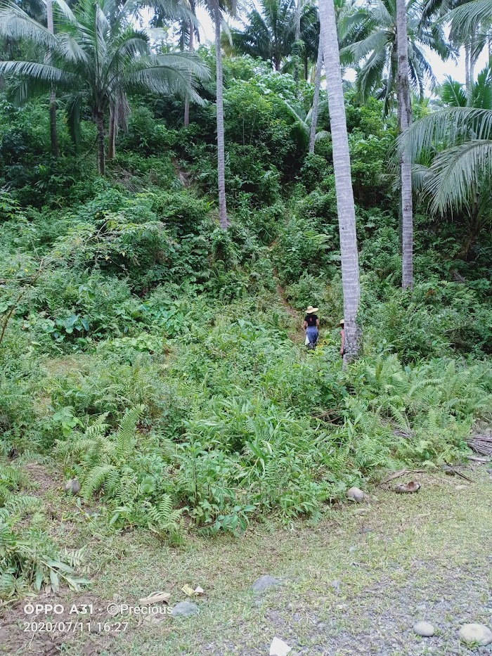
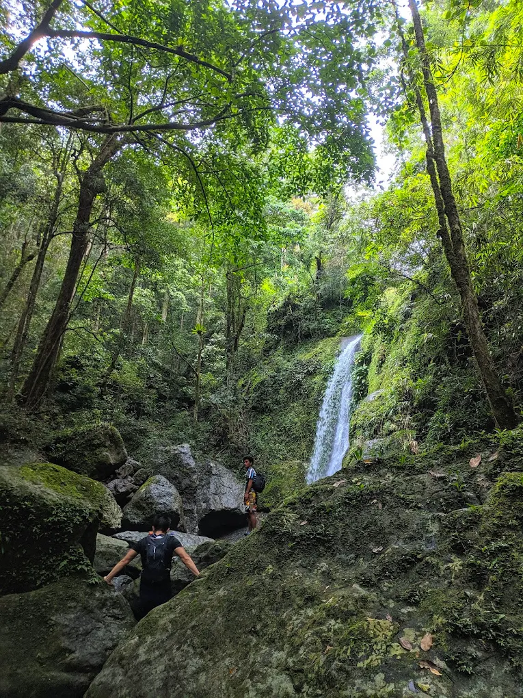
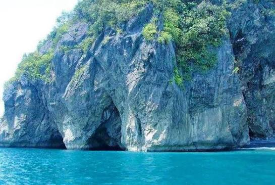
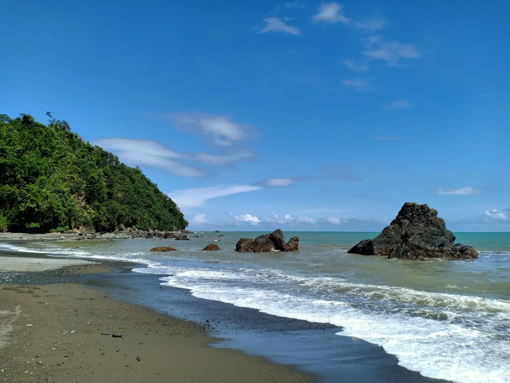
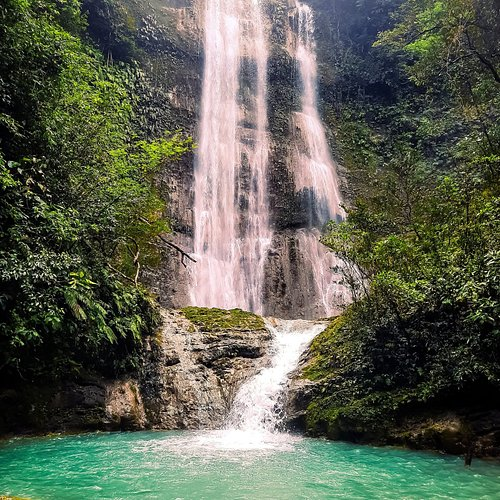
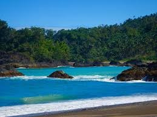

Natural beauty through waterfalls and rivers

A scenic destination showcasing natural beauty and peaceful surroundings perfect for relaxation and sightseeing.
Explore
A refreshing natural attraction known for its clear waters and relaxing outdoor environment.
Explore
An exciting cave destination featuring unique rock formations and an adventurous exploration experience.
Explore
A peaceful beach with clear waters and beautiful coastal views, ideal for relaxation and swimming.
Explore
A hidden waterfall surrounded by lush greenery, offering a cool and refreshing escape into nature.
Explore
A scenic coastal viewpoint with breathtaking ocean views and a relaxing sea breeze atmosphere.
Explore